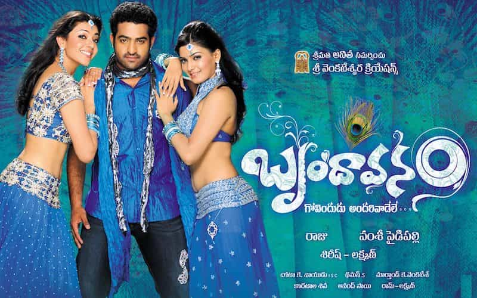

Krish (NTR Jr.) is the son of Surendra (Mukesh Rishi) a multimillionaire. He is love with indu (Samantha Ruth Prabhu) and introduce to his parents. Meanwhile, indu ask Krish to help her friend Bhoomi (Kajal Aggarwal), to go to her village as her boyfriend. Bhanu Prasad (Prakash Raj) father of Bhoomi want to marry to her brother-in-law (Ajay) - an uneducated rowdy. But Bhoomi want to go for higher studies. To escape from marriage, Bhoomi grand father Durga Prasad (Kota Srinivasa Rao) lies that Bhoomi had a boy friend. Bhanu Prasad ask Bhoomi to bring her boy friend. Krish along with Bhoomi to her village and was shocked to see her family. Krish try to correct her family to make her happy. He also joins Bhanu Prasad with his Step brother Sivudu (Srihari) who been fighting from years. Everyone was happy with Krish and decide to marry him to Bhoomi. Meanwhile, Bhoomi also love him but, wont express because of her friend Indu. Both Bhanu Prasad and Sivudu celebrate their family re-union, Then Sivudu adopted daughter comes to their house. She is none other than indu. The rest of the story is about how they come out of this trouble? Whom will krish marry?
